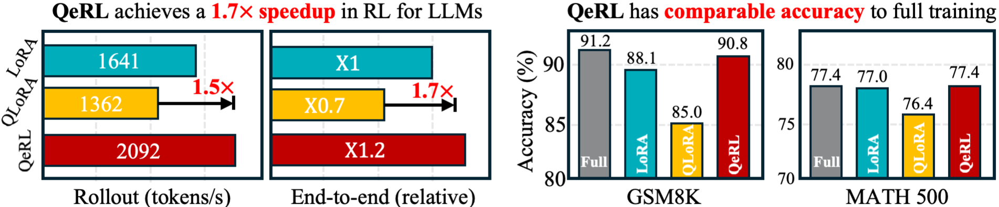
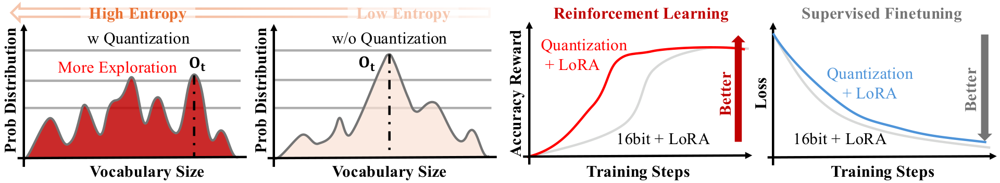
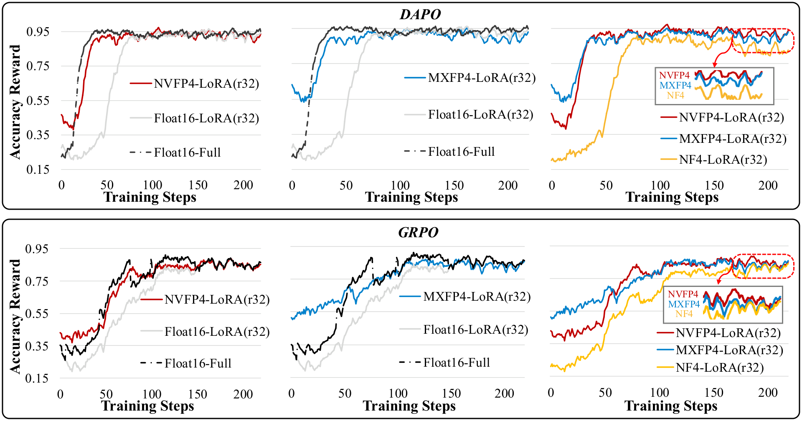
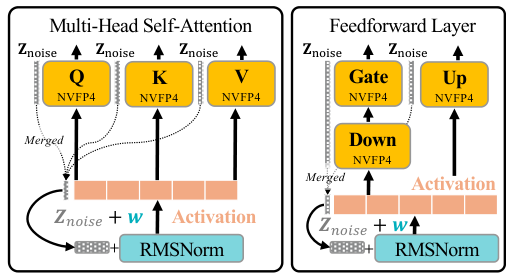
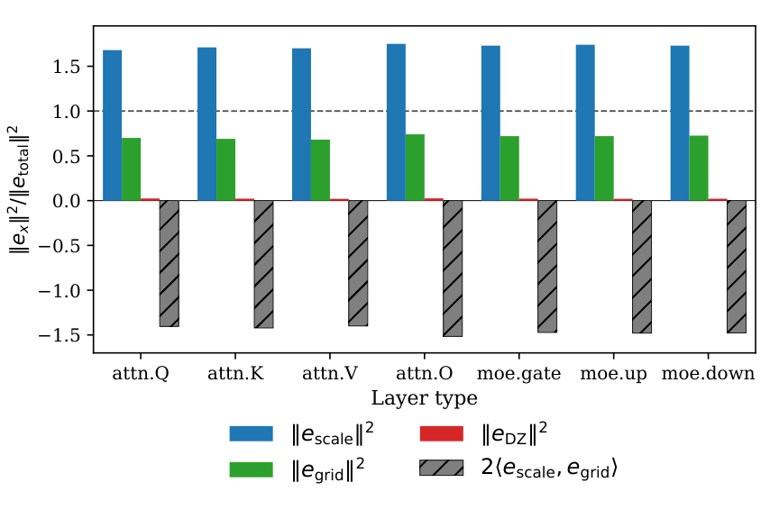
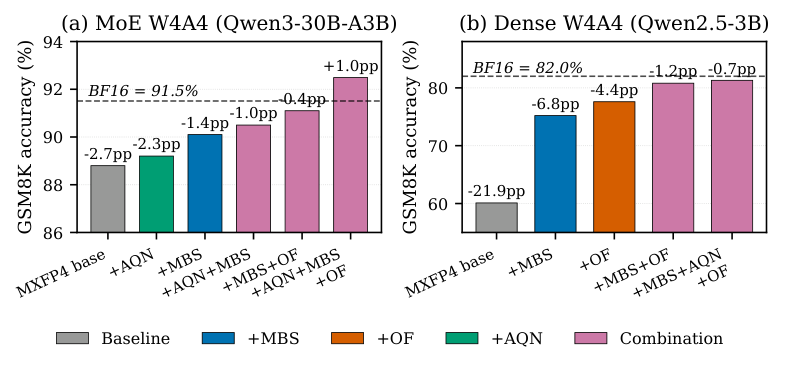
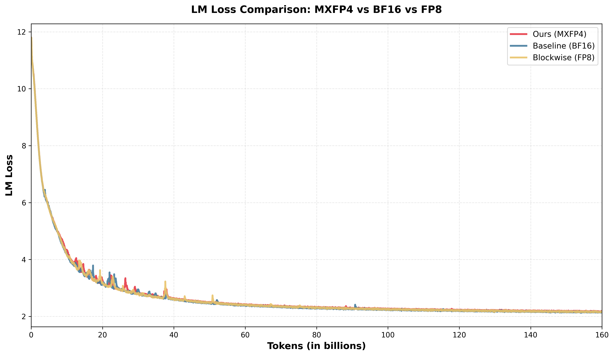

从 QLoRA 开始
QLoRA（2023）是 4-bit post-train 的先驱。每个linear层拆成两个分支：
- 主分支：冻结的预训练权重，存成 4-bit NF4、用时反量化成 BF16 算；
- LoRA 分支：可训的低秩 adapter，全程 BF16
NF4：为正态权重设计的数据类型
预训练权重近似零均值正态，NF4 直接把 $N(0,1)$ 的等概率分位数当格点，信息论上对正态权重最优
不同dtype对比结果
| 4-bit 数据类型 | Pile 平均 PPL ↓ | 说明 |
|---|---|---|
| Int4 | 34.34 | 均匀整数网格 |
| Float4 (E2M1) | 31.07 | MXFP4 / NVFP4 用的格点，硬件友好 |
| Float4 (E3M0) | 29.48 | 更多指数位 |
| NF4 | 27.41 | 正态分位数格点，硬件不友好 |
其他技术细节
- Double quantization：把一层 block-wise quantization 的 scale 再量化一次，减少显存占用
- Paged optimizer：optimizer states 放在 NVIDIA unified memory，方便做offload
实验结果
- 单张 48GB GPU 上微调Llama-65B；单张 24GB GPU 上微调Llama-33B
- 训练时间：9,209 条样本，3.3 epochs；Guanaco-65B 单卡约 24h，Guanaco-33B 单张 24GB GPU 小于 12h
量化噪声当探索用：从 SFT 到 RL 的反转
QeRL 直接继承 QLoRA 的范式，但把 NF4 换成 NVFP4，场景从 SFT 搬到 RL
实现路径也还是 PEFT：forward 用 NVFP4 weight-only 主干，activation 和 LoRA 保持 BF16，kernel 是 Marlin 的 NVFP4 × BF16
但QeRL 在 Qwen2.5-7B + GSM8K 上发现：NVFP4+LoRA 比 16-bit LoRA 还高 1.7% ，其机制正是 grid noise 的 temperature 效应
| QeRL 效率设置 | 硬件 / 输入 | 结果 |
|---|---|---|
| GRPO speed test | single H100-80GB，input 256 token，completion 上限 2048 | 7B: 15.2→5.9GB，E2E 1.5×/1.4×/1.2×；14B: 29.6→10.6GB，E2E 1.4×/1.2×/1.2×（bs=2/4/8） |
| 最终训练 | 8×H100，GSM8K 训练 3B/7B，BigMath 训练 7B/14B/32B | checkpoint 在 500–1000 steps 评估；论文同时强调 32B RL 可落到 single H100-80GB |
SFT 里的量化（QLoRA）
目标是忠实模仿数据分布，噪声是纯损失；用 NF4 这种最优数据类型把噪声压到最小，才能追平 16-bit，不追平就是失败
RL 里的量化（QeRL）
目标是发现高 reward 轨迹，噪声抬高 entropy → 更多样探索 → 更快找到好策略，和 parameter noise 一脉相承；噪声从损失变成了增益


三种 FP4 都涨，NVFP4 最好
对比 NF4 / MXFP4 / NVFP4，量化都涨、NVFP4 收敛最好。和分解一致：NVFP4 的 E4M3 scale + per-tensor FP32 兜底天然压低 scale bias，剩下更接近纯 grid noise

| Qwen2.5-7B / GSM8K | 训练方式 | Accuracy ↑ |
|---|---|---|
| BF16 | LoRA | 88.1 |
| NF4 | LoRA | 85.0 |
| MXFP4 | LoRA | 86.4 |
| NVFP4 | LoRA | 88.5 |
| NVFP4 | LoRA + AQN | 90.8 |
| BF16 | Full | 91.2 |
问题：噪声是静态的
量化噪声是确定性的，训练全程恒定，不像 parameter noise 能随阶段切换。早期 entropy 高帮探索是好事，但后期还顶着高 entropy 不退会阻止收敛。Decomposing MXFP4 实验里，MXFP4 baseline 的 entropy 在 step 50 就掉到 0.35，AQN+MBS 能维持 0.61
AQN：把静态噪声改成可调度探索
QeRL 提出 Adaptive Quantization Noise：每次 rollout 前给权重加高斯噪声 $\epsilon \sim \mathcal{N}(0, \sigma^2 I)$，$\sigma$ 按指数退火：
噪声塞进 RMSNorm，零参数开销
直接给量化层加噪声向量会破 NVFP4×BF16 kernel 兼容性。QeRL 利用 $\mathbf{X}(\mathbf{Z}_{\mathrm{noisy}} + \hat{\mathbf{W}}) = \mathbf{X}\mathbf{Z}_{\mathrm{noisy}} + \mathbf{X}\hat{\mathbf{W}}$，把加性噪声 $\mathbf{Z}_{\mathrm{noisy}}$ 吸进 RMSNorm 的 scale $\mathbf{w}$（$\mathbf{w}_{\mathrm{noise}} = \mathbf{Z}_{\mathrm{noise}} + \mathbf{w}$），等价于 row-wise 乘性噪声作用在权重上。Q/K/V 共享一个、gate/up 共享另一个，零参数开销且不破坏 kernel

MXFP4 与 NVFP4
QLoRA 之后，硬件侧的两种 4-bit 浮点是 MXFP4（OCP 标准）和 NVFP4（NVIDIA）。两者共用 E2M1 元素，差别只在 block 粒度和 scale 上：
| 格式 | block size | block scale | 额外 scale |
|---|---|---|---|
| MXFP4（OCP） | 32 | E8M0（power-of-two） | 无 |
| NVFP4（NVIDIA） | 16 | E4M3（FP8） | per-tensor FP32 global scale |
把 MXFP4 误差拆成三块
Decomposing MXFP4 Quantization Error 论文中，将MXFP4的量化误差 $e = Q(x) - x$ 拆成：
其中：
- scale bias：E8M0 只有幂次，$s_b$ 一定比理想 $s_b^*$大，平均 ~44% 偏差，是 scale 量化本身引入的
- deadzone truncation：$|x| < m_b/24$ 的值直接被抹零，约 9% 权重被剪掉，是信息丢失不是噪声
- grid noise：E2M1 网格太粗（只有 15 个格点），非 deadzone 元素 round-to-nearest 带来的零均值噪声
一个精确的 MSE 恒等式
| Model | $\|\mathbf{e}^{\mathrm{scale}}\|^2 / \|\mathbf{e}\|^2$ | $\|\mathbf{e}^{\mathrm{DZ}}\|^2 / \|\mathbf{e}\|^2$ | $\|\mathbf{e}^{\mathrm{grid}}\|^2 / \|\mathbf{e}\|^2$ | 交叉项 | $\cos$ |
|---|---|---|---|---|---|
| Qwen2.5-3B (dense) | 1.725 | 0.026 | 0.703 | −1.454 | −0.657 |
| Qwen3-30B-A3B (MoE) | 1.726 | 0.022 | 0.712 | −1.460 | −0.658 |

三块误差各打一条 RL 通路
RL post-train 有三条通路：policy gradient 精度、rollout 质量、exploration-exploitation 平衡。三块误差对三条通路都有扰动，但各自的数学结构使每块在一条通路上有支配性效应。完整的 $3\times 3$ 矩阵如下，对角线是支配效应：
反向 STE 链式把 $\gamma_b$ 逐层乘起来，无 LayerNorm 归一化，$L$ 层后梯度量级指数漂移
前向每层 $O(\gamma-1)\approx 0.5$ 扰动，但 LayerNorm 在层间重置，不累积
非零均值（$\mathbb{E}[\gamma-1]\approx 0.44$），更像 bias / mode shift 而非噪声
STE 把 $Q$ 当恒等，梯度穿过 deadzone 如同原值还在，反向几乎不可见
前向确定性抹零 9% 权重，降低有效秩，rollout 更平淡、reward 均值低方差大
系统性收缩（$e^{DZ}=-x$，总朝零），去容量而非加噪声，entropy 略升是副产物
零均值前向噪声 → 零均值梯度噪声，只加方差不加 bias，和 mini-batch 随机性同量级
整条 response 上 i.i.d. 扰动 $O(1/\sqrt{T})$ 平均掉，reward 质量影响小
零均值 + dense，等于给 logit 加噪声，不移动 mode 只展宽分布，抬高有效温度
scale bias 为什么是梯度问题
前向有 LayerNorm 每层重置幅度，scale bias 不累积；反向 STE 把 $Q$ 当恒等，链式法则把每层 $\gamma_b = s_b/s_b^*$ 一路乘下去，无归一化。梯度量级对数比按层累加：
deadzone 为什么是 rollout 问题
deadzone 是确定性剪枝（$e^{DZ}=-x$，总朝零），不是随机扰动。它降权重有效秩（Eckart-Young：小奇异值对 element-wise thresholding 更敏感），rollout 变"笨"——reward 均值低方差大，advantage $\hat A_i$ 更噪。反向 STE 把 deadzone 当不存在、梯度照流，所以前向全损、反向无感，纯粹打 rollout 质量
grid noise 为什么是探索问题
grid noise 是三块里唯一 dense 且近似零均值的。零均值扰动 logit 不移动分布的 mode，只展宽它，数学上等价于温度缩放：
这一条是连接 QeRL 的桥梁：grid noise 抬高 entropy = 帮探索。但注意它是恒定的，训练全程不退火，会把 entropy 顶在高位下不来——这正是 AQN 要解决的事
三个旋钮：MBS / OF / AQN
Decomposing MXFP4 的修正对应三块误差：MBS 压 scale bias、OF 恢复 deadzone、AQN 在剩下的 grid floor 上做受控探索。前两个是静态误差修正（QDQ 模拟，原为推理设计、这里搬到训练），AQN 是训练配方
MBS：给 E8M0 补 8 位尾数
MBS（Macro Block Scaling）在更粗的 macro-block（128 元素 = 4 个 MXFP4 block）上算一个 8 位尾数修正 $m_{\mathrm{MBS}} \in [0,1)$（E0M8，256 级）
OF：两趟残差恢复 deadzone
deadzone 是信息丢失，调 scale 救不回来。OF（Outlier Fallback）做两趟量化：第一趟 outlier 准确但小值进 deadzone，第二趟量化残差（动态范围小，之前被抹的值现在能表示）：
结果：dense 追平、MoE 反超
| Condition (MoE, Qwen3-30B-A3B) | AQN | MBS | OF | GSM8K (%) | Gap |
|---|---|---|---|---|---|
| BF16 baseline | 91.51 | — | |||
| MXFP4 baseline | 88.8 | −2.7 | |||
| +MBS | ✓ | 90.1 | −1.4 | ||
| +OF | ✓ | 90.3 | −1.2 | ||
| +AQN+MBS | ✓ | ✓ | 90.5 | −1.0 | |
| +MBS+OF | ✓ | ✓ | 91.1 | −0.4 | |
| +AQN+MBS+OF | ✓ | ✓ | ✓ | 92.49 | +1.0 |
| Condition (Dense, Qwen2.5-3B) | MBS | AQN | OF | GSM8K (%) | Gap |
|---|---|---|---|---|---|
| BF16 baseline | 82.0 | — | |||
| MXFP4 baseline | 60.1 | −21.9 | |||
| +MBS | ✓ | 75.2 | −6.8 | ||
| +OF | ✓ | 77.6 | −4.4 | ||
| +MBS+OF | ✓ | ✓ | 80.8 | −1.2 | |
| +MBS+AQN+OF | ✓ | ✓ | ✓ | 81.3 | −0.7 |

Hopper 没有原生 FP4 怎么办
Practical FP4 Training for Large-Scale MoE Models on Hopper GPUs（arXiv:2603.02731）提出，在 Hopper 上把 MXFP4 用到 activation memory 和 expert-parallel communication
Hopper 没有 FP4 tensor core，论文的做法不是硬算 FP4，而是FP4 存储/通信 + FP8 计算：forward 激活缓存和 expert-parallel A2A 用 MXFP4 压带宽，GEMM 仍走 Hopper 原生 FP8 tensor core，MoE combine 阶段保留 BF16 accumulation
覆盖范围：仅mlp和MOE层，且 backward 不用 FP4：profile 发现 backward FP4 dequant 开销超过梯度通信省下的。forward 激活量大、缓存和 A2A 吃带宽，FP4 收益盖过 dequant；backward 梯度通信量小，dequant 反成瓶颈
关键工程点
- 直接做 FP4→FP8 位级转换，绕开 FP4→BF16→FP8 的中间访存和额外舍入
- forward FP4 激活缓存和 A2A 通信，payload 约减半；backward 保守回 FP8，因为 FP4 dequant 开销超过梯度通信收益
- 把 dequant、transpose、requant 融进 layout-aware CUDA kernel，避免多次 global memory 读写
671B 实验结果
| 重算范围 (671B MoE) | BF16 TGS | BF16 Mem | FP8 TGS | FP8 Mem | MXFP4 TGS | MXFP4 Mem |
|---|---|---|---|---|---|---|
| Attn+LN+MoE Experts | 1122 | 68.3% | 1157 | 74.2% | 1156 | 59.4% |
| Attn+LN+MLP | OOM | — | OOM | — | 1248 | 60.6% |
| MLA Up Proj Only | OOM | — | OOM | — | 1302 | 70.1% |
256×H100，DeepSeek-V3 架构（MLA + MoE）。TGS = tokens/GPU/s
关键不是单点加速，而是显存让出 recompute 空间。少做的重算比 FP4 dequant 更值

长 CoT 仍未验证
Decomposing MXFP4 的 Appendix G 把 long chain-of-thought 明确列为 scope limitation
作者观察到，GSM8K 这种短中 response 上 W4A4 能恢复甚至反超，但 DAPO-MATH 长 response 上同一配方会出现 trajectory divergence 和更多 unparseable / non-terminating。文中给出的后续方向是提高 activation precision，比如 W4A8